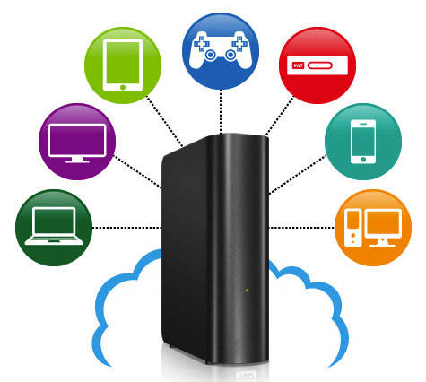
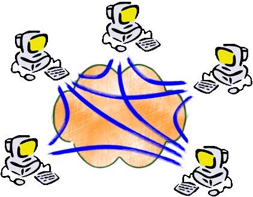

|  |
Cloud is a good solution for enterprise and mobile apps by sharing public resourses for data and services, but not everyone is comfortable to leaving all personal data under the control of third-party and moving big data back and forth, as well as the rising bills driven by the data explosion. Cloud is too far for a digital home, Lebula is in place. |
Lebula.com Lebula Sync Lebula Drive PPEngine |
|  |
PPEngine is a software tool set for peer-to-peer (P2P) networking. The aim of the project is to build a series of libraries (or a software framework) to make it easier to introduce peer-to-peer features into network applications. It leveraged existing technologies of NAT traversal and P2P VPN. |
C++, STL, XML TCP/UDP HTTP, DNS NAT, STUN/TURN/ICE Windows, Visual Studio Linux, GCC/G++/GDB |

|
FireWind is a Internet video streaming system (WebTV) that works in a peer-to-peer (P2P) fashion. I worked on this project as a Senior Software Engineer (Architect) at first and a Director of Software Development later. The system includes web-based applications for management, servers running on Windows and Linux, client side application and ActiveX control. My work involved in the full lifecycle of the software development. |
C++, STL, MFC Winsock, TCP/UDP HTTP, RTP/RTSP ASF/WMV, RM/RMVB Win32, ActiveX Visual Studio 6.0/2003 GCC/G++/GDB Windows, Linux |

|
GoldenEye is a software framework for the development of digital video surveillance system that typically centered on PC-based DVR (digital video recorder), which usually equipped with dedicated audio/video encoding cards, communication cards, and dedicated software. Intellegent functions and network surveillance/control. |
Video Capture/Display Video Compression Serial Communication Media Streaming |